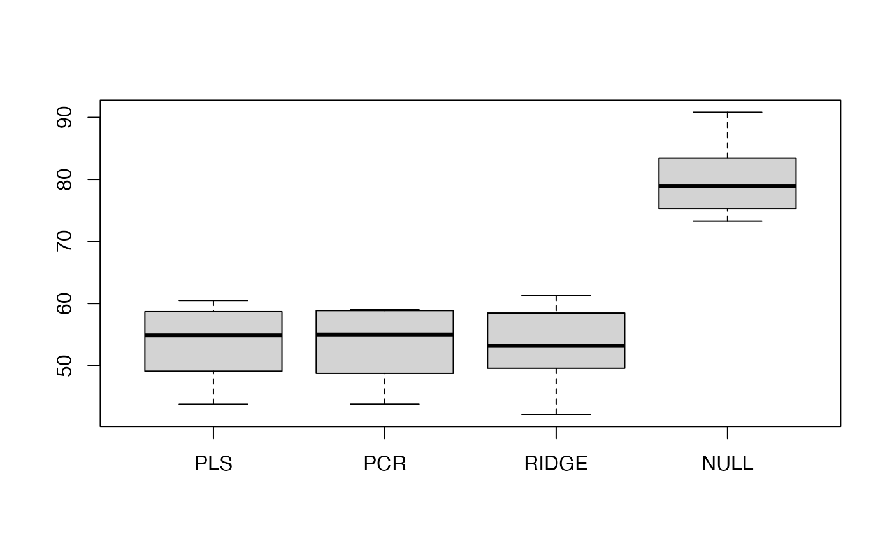
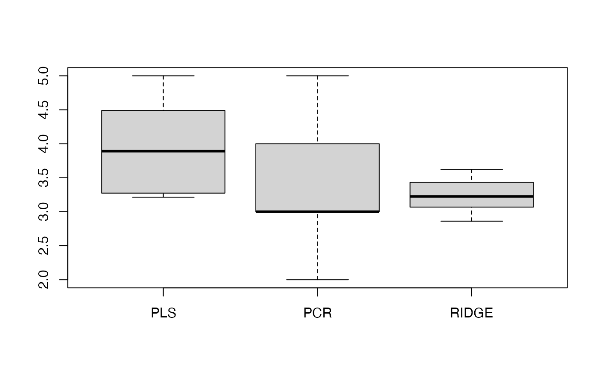

Comparison of Partial Least Squares Regression, Principal Components Regression and Ridge Regression.
Source:R/benchmark.regression.R
benchmark.regression.RdThis function computes the test error over several runs for (a) PLS, (b) PCR
(c) Ridge Regression and (d) the null model, that is the mean of y.
In the first three cases, the optimal model is selected via
cross-validation.
Arguments
- X
matrix of predictor observations.
- y
vector of response observations. The length of
yis the same as the number of rows ofX.- m
maximal number of components for PLS. Default is
m=ncol(X).- R
number of runs. Default is 20.
- ratio
ratio no of training examples/(no of training examples + no of test examples). Default is 0.8
- verbose
If
TRUE, the functions plots the progress of the function. Default isTRUE.- k
number of cross-validation splits. Default is 10.
- nsamples
number of data points. Default is
nrow(X).- use.kernel
Use kernel representation for PLS? Default is
use.kernel=FALSE.- supervised
Should the principal components be sorted by decreasing squared correlation to the response? Default is FALSE.
Value
- MSE
data frame of size R x 4. It contains the test error for the four different methods for each of the R runs.
- M
data frame of size R x 4. It contains the optimal model parameters for the four different methods for each of the R runs.
- DoF
data frame of size R x 4. It contains the Degrees of Freedom (corresponding to
M) for the four different methods for each of the R runs.- res.pls
matrix of size R x (ncol(X+1)). It contains the SSR for PLS for each of the R runs.
- res.pcr
matrix of size R x (ncol(X+1)). It contains the SSR for PCR for each of the R runs.
- DoF.all
matrix of size R x (ncol(X+1)). It contains the Degrees of Freedom for PLS for all components for each of the R runs.
Details
The function computes the test error, the cross-validation-optimal model parameters, their corresponding Degrees of Freedom, and the sum-of-squared-residuals (SSR) for PLS and PCR.
References
Kraemer, N., Sugiyama M. (2011). "The Degrees of Freedom of Partial Least Squares Regression". Journal of the American Statistical Association 106 (494) https://www.tandfonline.com/doi/abs/10.1198/jasa.2011.tm10107
Examples
# \donttest{
# Boston Housing data
library(MASS)
data(Boston)
X<-as.matrix(Boston[,1:4]) # select the first 3 columns as predictor variables
y<-as.vector(Boston[,14])
my.benchmark<-benchmark.regression(X,y,ratio=0.5,R=10,k=5)
#> iteration no 1
#> iteration no 2
#> iteration no 3
#> iteration no 4
#> iteration no 5
#> iteration no 6
#> iteration no 7
#> iteration no 8
#> iteration no 9
#> iteration no 10
# boxplot of the mean squared error
boxplot(my.benchmark$MSE,outline=FALSE)

# boxplot of the degrees of freedom, without the null model
boxplot(my.benchmark$DoF[,-4])

# }